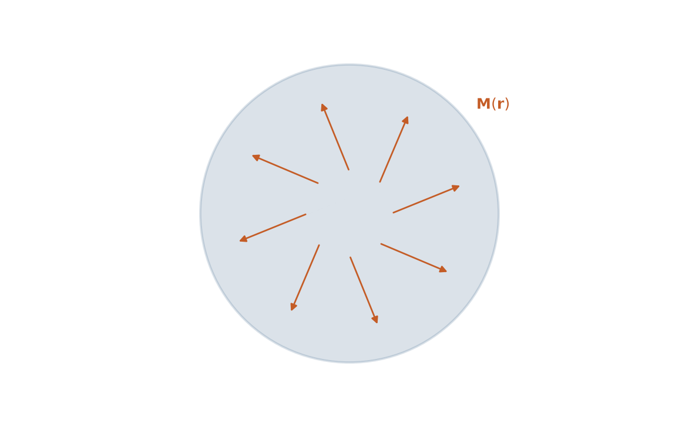
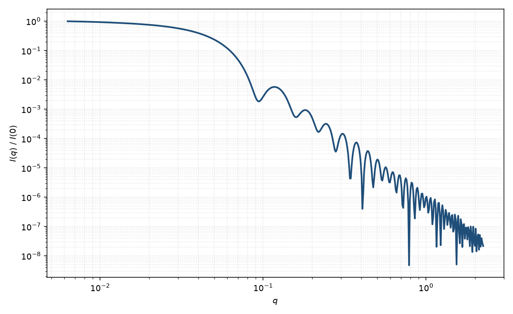

三维微磁形式因子
micromagnetic form factor 3D
适用场景
当纳米颗粒或微结构内部的磁化 $\mathbf{M}(\mathbf{r})$ 不是均匀块、不能用单个磁 Rayleigh 球概括时，需要三维微磁形式因子：由微磁学给出的 $\mathbf{M}(\mathbf{r})$ 做傅里叶变换，再按偶极选择规则投影到 $\mathbf{q}$ 垂直分量（Mühlbauer 等，2019）。适用于涡旋、花态、畴壁、skyrmion 袋，以及核–壳磁性颗粒中的自旋错向晕。
均匀饱和磁化的球体在严格意义上不产生小角磁散射涨落（均匀 $\mathbf{M}$ 只贡献 $q=0$ 的宏观磁化）；小角信号来自空间不均匀。若只关心“磁核半径 vs 核半径”，先用均匀磁球；本页针对三维微磁纹理。
物理图像
核散射由核 SLD $\rho_n(\mathbf{r})$ 决定；磁散射由 Halpern–Johnson 矢量 $\mathbf{Q}=\hat{\mathbf{q}}\times[\hat{\mathbf{q}}\times\widetilde{\mathbf{M}}(\mathbf{q})]$ 决定，只敏感 $\mathbf{M}_\perp$。未极化强度含核项、磁项与核–磁交叉项；极化通道（SANSPOL / 自旋分析）可把它们拆开。三维微磁形式因子即 $\widetilde{\mathbf{M}}(\mathbf{q})$ 在给定外场与边界条件下的数值或半解析结果。
示意图


核心公式
出发点
核通道仍是核 SLD 的傅里叶变换 $F_n(\mathbf{q})=\int\rho_n(\mathbf{r})\,\mathrm{e}^{-i\mathbf{q}\cdot\mathbf{r}}\,\mathrm{d}^3r$。磁通道由磁化的傅里叶变换出发
$$\widetilde{\mathbf{M}}(\mathbf{q})=\int \mathbf{M}(\mathbf{r})\,\mathrm{e}^{-i\mathbf{q}\cdot\mathbf{r}}\,\mathrm{d}^3r.$$偶极选择规则只保留垂直于 $\mathbf{q}$ 的分量：Halpern–Johnson 矢量 $\mathbf{Q}=\hat{\mathbf{q}}\times[\hat{\mathbf{q}}\times\widetilde{\mathbf{M}}]$，即 $\widetilde{\mathbf{M}}_\perp=\widetilde{\mathbf{M}}-(\hat{\mathbf{q}}\cdot\widetilde{\mathbf{M}})\hat{\mathbf{q}}$。均匀饱和磁化只贡献 $q=0$ 的宏观磁化，小角磁信号来自 $\mathbf{M}(\mathbf{r})$ 的空间不均匀。
推导
磁微分散射截面正比于垂直分量模方
$$\frac{\mathrm{d}\Sigma_{\mathrm{mag}}}{\mathrm{d}\Omega}\propto \bigl\lvert \widetilde{\mathbf{M}}_\perp(\mathbf{q})\bigr\rvert^2.$$若把磁化写成饱和值加涨落 $\mathbf{M}=M_s\hat{\mathbf{m}}+\delta\mathbf{M}$，线性化后 $F_m$ 由磁散射长度密度 $\rho_{\mathrm{mag}}\propto M$ 承担。稀溶液、未极化、核–磁交叉项取向平均为零时，示意
$$I(q)=n\bigl(|F_n|^2+|F_m|^2\bigr)+B.$$均匀磁球：$F_m=\rho_m V\Phi(qR_m)$，与核 Rayleigh 同形但半径、衬度独立。微磁学在交换长度 $l_H$ 上给出自旋错向晕时，涨落相关近似为指数 $\langle\delta\mathbf{M}(0)\cdot\delta\mathbf{M}(r)\rangle\propto\mathrm{e}^{-r/l_H}$，傅里叶变换给出 Lorentz 因子 $1/(1+q^2 l_H^2)$，常叠加在粒子形式因子的低 $q$ 上。一般涡旋、花态、skyrmion 需对给定 $\mathbf{M}(\mathbf{r})$ 做三维数值变换。
低 $q$ 与极限
均匀磁核：$F_m(0)=\rho_m V_m$，Guinier 半径 $R_{g,m}=R_m\sqrt{3/5}$，死层表现为 $R_m<R_n$。自旋错向晕在 $q l_H\lesssim 1$ 呈 Lorentz $I_{\mathrm{halo}}\propto 1/(1+q^2 l_H^2)$，没有粒子那样的 $I(0)\propto V^2$ 饱和（关联若被颗粒尺寸截断，则两者并存）。
均匀 $\mathbf{M}$ 的磁 SAS 极限为零（只剩 $q=0$）。大 $q$ 磁界面若尖锐，包络仍可走 $q^{-4}$；交换晕则更快或呈 Lorentz 尾。极化通道把 $|F_n|^2$、$|F_m|^2$ 与交叉项拆开，未极化数据无法唯一分离。
参数表
| 参数 | 符号 | 含义 | 单位 | 典型范围 |
|---|---|---|---|---|
| 核半径 | $R_n$ | 核散射看到的几何半径 | Å 或 nm | 50–2000 Å |
| 磁半径 | $R_m$ | 磁化核的有效半径（可小于 $R_n$，死层） | Å 或 nm | 与 $R_n$ 相近或略小 |
| 核 SLD | $\rho_n$ | 核散射长度密度 | Å$^{-2}$ | 组成决定 |
| 磁 SLD | $\rho_m$ | 磁散射长度密度，$\propto M$ | Å$^{-2}$ | 由饱和磁化估计 |
| 交换 / 晕长度 | $l_H$ | 自旋错向关联长度 | Å | 数十至数百 Å |
| 场与极化 | $\mathbf{H},P$ | 外场方向与中子极化 | T，无量纲 | 实验几何 |
拟合注意
必须把磁性 SLD 与核 SLD 分开：前者随磁化强度、温度与场变化，后者几乎不变。死层表现为 $R_m<R_n$。未极化数据无法唯一拆开 $|F_n|^2$ 与 $|F_m|^2$，优先做极化差分或场开关。
取向不再平凡：微磁纹理相对外场有择优方向，粉末平均会抹去 2D 各向异性指纹（三叶草、扇形）。拟合三维微磁 $P(q)$ 前应确认探测器图样是否各向异性。多分散同样抹振荡，但不会产生磁场依赖——场依赖是磁性起源的判据。
相近模型
- 均匀球 — 核通道或均匀磁化球的基线形式因子。
参考文献
- Mühlbauer, S.; et al. Magnetic small-angle neutron scattering. Rev. Mod. Phys. 2019, 91, 015004. DOI: 10.1103/RevModPhys.91.015004